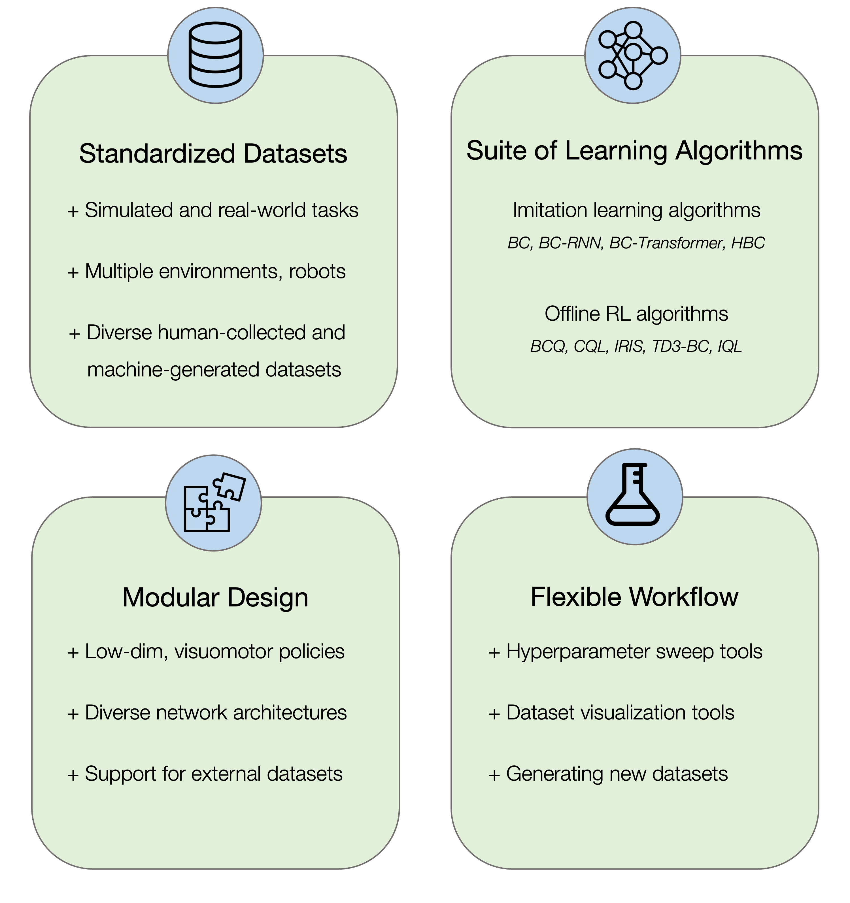

Overview
Contents
Overview#


robomimic is a framework for robot learning from demonstration. It offers a broad set of demonstration datasets collected on robot manipulation domains and offline learning algorithms to learn from these datasets. robomimic aims to make robot learning broadly accessible and reproducible, allowing researchers and practitioners to benchmark tasks and algorithms fairly and to develop the next generation of robot learning algorithms.
Core Features#

Reproducing benchmarks#
The robomimic framework also makes reproducing the results from different benchmarks and datasets easy. See the datasets page for more information on downloading datasets and reproducing experiments.
Troubleshooting#
Please see the troubleshooting section for common fixes, or submit an issue on our github page.
Contributing to robomimic#
This project is part of the broader Advancing Robot Intelligence through Simulated Environments (ARISE) Initiative, with the aim of lowering the barriers of entry for cutting-edge research at the intersection of AI and Robotics. The project originally began development in late 2018 by researchers in the Stanford Vision and Learning Lab (SVL). Now it is actively maintained and used for robotics research projects across multiple labs. We welcome community contributions to this project. For details please check our contributing guidelines.
Citation#
Please cite this paper if you use this framework in your work:
@inproceedings{robomimic2021,
title={What Matters in Learning from Offline Human Demonstrations for Robot Manipulation},
author={Ajay Mandlekar and Danfei Xu and Josiah Wong and Soroush Nasiriany and Chen Wang and Rohun Kulkarni and Li Fei-Fei and Silvio Savarese and Yuke Zhu and Roberto Mart\'{i}n-Mart\'{i}n},
booktitle={Conference on Robot Learning (CoRL)},
year={2021}
}